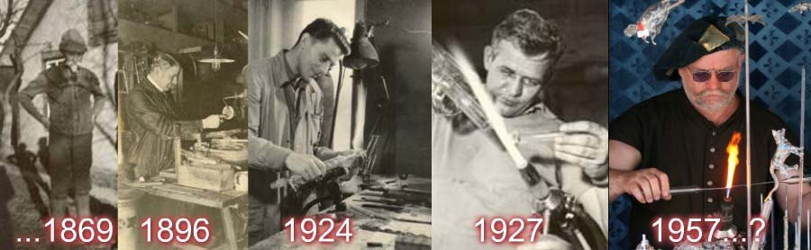

Ostatní výrobky
Máte-li zájem zhlédnout pár mých dalších výrobků, odkážu vás na můj Flér.
Budete-li mít nějaké speciální požadavky, napište mi a já se pokusím spojit vaše představy a moje možnosti.
… z Boží vůle sklář…

Máte-li zájem zhlédnout pár mých dalších výrobků, odkážu vás na můj Flér.
Budete-li mít nějaké speciální požadavky, napište mi a já se pokusím spojit vaše představy a moje možnosti.